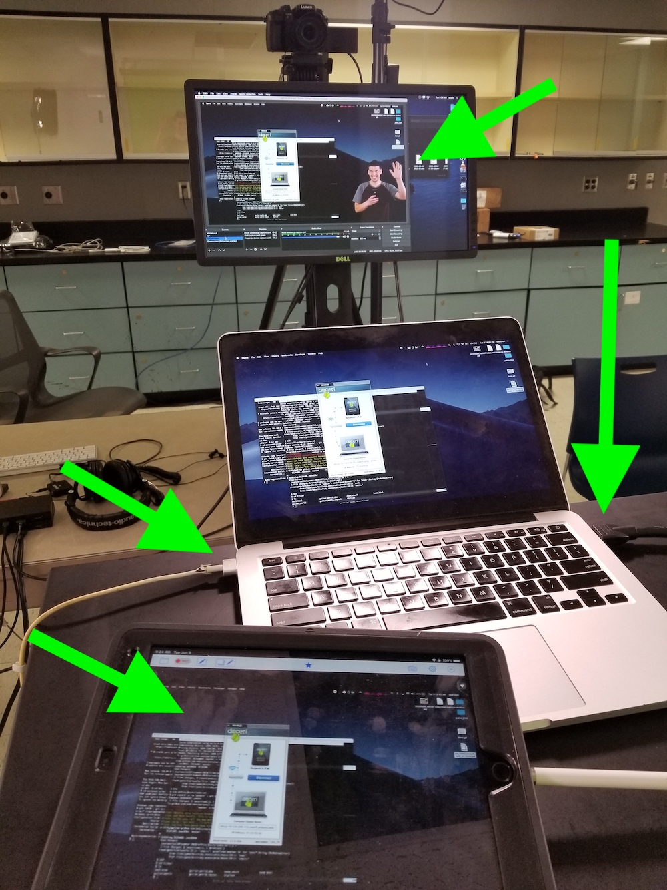

If the camera and lights are on, the next step is to log into the computer. After logging in, make sure the OBS software is open, and set to the desired mode. For 337, this is typically the greenscreen mode.
Go the the podium, and place your laptop on it. Make sure the HDMI cable and your power cable are plugged in. You should be able to see yourself as well as the contents of your screen on the monitor. You can also synch an iPad with your laptop via Doceri.